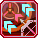

Archery
Archery
Cranked to Eleven

Bullshit
Bullshit
To Its Core

The most bullshit attack rotation of all time...
Notorious for its absurdity and difficulty, yet eventually turning to the most falsely acclaimed “brain-dead” attack rotation, we have the Banishing Arrow Combo. People would dub it as “Banish Combo”, where every bow braver will try his best to put in as many Photon Arts into Banishing Arrow as possible in a timely manner for massive damage output.
The property of Banishing Arrow does create a large room of creativity and big-brain plays. However, you will end up being strict with your combo patterns in most fights due to speed and PP problems that ensue.
Banish Combo
is all about deciding what bow Photon Arts should we use to maximize the damage of Banishing Arrow within the three-seconds time frame. We are spending around 45 PP as a “damage investment” to offset the limitations imposed by various bow Photon Arts and improve PP efficiency.
For example, one of the most staple yet hand-destroying combo of Bow Braver (shown later), is firing EIGHT Penetrate Arrows in a row and hoping it to hit twice. Although it yields a sickening amount of damage (it does) with proper positioning, it costs a staggering 245 PP to execute even with Bullet Bow Charge Bonus and neglecting any PP Reduction.
Now, the question would be "why should I use it though?
Can’t I just use other PA like Million Storm or keep firing Penetrate Arrow?
Let’s look at the image below, alogside  Bullet Bow Charge Bonus.
Bullet Bow Charge Bonus.
A single Banishing Arrow that cost 45 PP can deal an equivalent amount of damage to firing
five Penetrate Arrows that would have cost you another 125 PP, in just three seconds. To anyone
surprises, you can say that Banishing Arrow functions similar to PP Reduction sources in PSO2!!!
Shorter combos also enjoy more efficient damage with the PA as well.
Being restrained to Banish Combo is the main reason that many despise Bow Braver, even worse with various nerfs to it in the past.
Various gameplay and gearing problems also stem from this damned PA. Nevertheless,
no one can deny the fact that, when learned and used right, Bow Braver’s Banish Combo is one of the strongest,
most versatile, and most sustained attack rotations in PSO2.
Now, there are a couple more things that you should keep in mind while performing the combo. Only you can answer these questions yourself through observation, experiments, and practice for experiences.
Anyway, after my extensive testing and watching lots of examples out there, I have come to the conclusion that there are 2 common variations of Banish Combo. The name will make you feel a bit cringe, but that’s just me. You will decide whether it is “a good time” to perform the combo. Sometimes, firing several PA + Chase Arrows is sufficient. Sometimes, you just need more…
Barrage Banisher, aka "The Long Combo", is often your primary rotations. It's pretty much firing multipler PA, mainly Penetrate Arrow by abusing its piercing property and Master Shot from its improved tracking property. Final Nemesis or Torrential Arrow can be added as well. If you want to conserve PP or abuse PA Step, the charged variant also works.
“There’s only 3 seconds to follow up after the first PA hits”. That’s the reason why you can do whatever you want on the first hit for extra damage added to Banishing Arrow, depending on the situation.
Moreover, Master Shot and Penetrate Arrow can be used together, allowing you to kite the boss around while maintaining
your damage output. With the right conditions, the “Double-hit, Penetrate Arrow Only”
variant remains the fastest to execute and gives the highest damage of all.
There are two downsides to this combo. First, it consumes fuck tons of PP, especially the “Penetrate Arrow Only”, requiring you to have 200-250 PP, even with Bow Charge Bonus. Second, adding Final Nemesis and Torrential Arrow will delay the subsequent combos. You may break the later combos just for that big damage if you don’t time it well.
Precision Banisher, aka "The Short Combo", is the situational rotation. You are now firing less PAs compared to Barrage Banisher, usually by aiming everything yourself. It is used when you need to be efficient with PP usage during Rapid Shoot downtime or otherwise.
Take notes when doing the combo.
The only downside for this combo variation is that you may have to manually aimb them and position yourself correctly to make it work. Sometimes, you just can’t do Barrage Banisher all day long as Rapid Shoot downtime or the boss movement is just too annoying to keep locking on to them. Be split seconds slower, whiffing that PA or not standing at a correct place will ruin everything.
An extension of Barrage Banisher. If you have been playing PSO2 for a long time, whether as Bow Braver or other classes, you should have heard something along this line:
“It’s possible to fire up to 9 Penetrate Arrows or Master Shots within 3-seconds of Banishing Arrow’s detonation timer.”
|
9 Penetrate Arrow |
9 Master Shot |
YES, it is indeed possible. I did take some time recheck some numbers and testing some info out there. After a first PA hit - Penetrate Arrow or Master Shot - and triggers Banishing Arrow, you have less than 180 Frames available to fire 8 more of either. While the frame math looks promising, we have to account the travel speed of those PA and human errors as well, so it's not really feasible in real fight even with good practice.
I get it that striving for damage is something we want, but there're some catches here.
Bullet Bow Charge Bonus.| Damage Values tested with Argus’s Setup | ||
|---|---|---|
| Type | Penetrate Arrow | Master Shot |
| PA Damage | 98438 per hit [196876 for double hit] |
125745 per use [41915 per arrow] |
8 PA combo | 1023755 | 653874 |
| 9 PA Combo | 1151724 [1087740***] |
735608 |
Comparing the damage output, squeezing the ninth PA means we are doing 12.5% more than the typical eight-PAs combo. However, if we are comparing it through “potency per PP spent”, it’s 2.5% higher. The numbers are there, but what about it though?
It’s something you can do, and I advise against it. Remember, the extra PP that you invest in a single combo can impact
your PP economy and the next combo you are planning. You may have to waste extra seconds to fully recover the PP cost,
or run out of it in a very bad situation. All in all, it can induce carpal tunnel syndrome,
finger locks, and don't try too hard with mouse macro.
I may be exaggerating, but this is one of those times that you can trust the words of a stranger on the Internet.
Alongside the general variations of the combo cringely stated in the above tabs, I took some time to make a cursed "combo chart" as well. It should include the following:
Click here to see it. The chart is so damn large that it'll be difficult to even zoom in.
Keep the following in mind when perfoming Banish Combo. Mst can get away without knowing it at all and learn or getting used to Banish Combo by just playing the class.
You got less than 60 seconds during Rapid Shoot. It will add up.
Apart from alll of that stuff, Bow Braver shares the same struggle as Partizan Hunter when it comes to its blasted focal PA (Banishing Arrow and Volgraptor). There are three common situations where you can potentially lose Banishing Arrow.
| Situation #1 | Situation #2 | Situation #3 |
|---|---|---|
| Attempting to chain the subsequent Banish Combo too quickly, especially when you combine multiple PAs (Torrential Arrow, Chase Arrow, Penetrate Arrow, and Enhanced Auxiliary Arrow). The server may delay the registration of the following Banishing Arrow. | The (weak) parts of various bosses in PSO2 can have a very questionable hit-sphere . One of the best examples is Deus ESC-A Gracia’s core. If you somehow didn’t land your Banishing Arrow directly on the core’s frontal area, the game will place the marker on his body instead... | Your damage estimation is a bit off, causing you to accidentally break the targeted part with Banishing Arrow on it . Otherwise, the enemy behavior can be so erratic that it can decide to say “fuck you and your combo”, then either disappear or retract its part. |
There are several ways to reduce the chance of losing Banish Arrow.
Oh, you thought the notes for Banish Combo are over? There's more that you should know based on your current subclass! Again, most can get away by playing the game as usual while neglecting the practical, or even meme-tier stuff.
Same Arts PP Save and Tech Arts Bonus Count can influence your PA usage. In general, it’s not going to change your rotation that much, but keeping the PA order in your mind will help with it. Please consider the following combo patterns as “extra and exclusive things” you can do better than the other subclass choices.
Tech Arts Bonus Count also turns subsequent Banishing Arrow, especially the failed one, into a “trigger” for damage bonus and PP Reduction for the next 3 PA, resulting in extreme flexibility. Therefore, if you aren’t that experienced with Bow Braver, having to pay attention to these details can be overwhelming. It will take time.
It is kinda complicated, but you should get the idea.
You may want to fire a Normal Attack once to keep the Voltage up.
Besides, the only time where you can consistently achieve 500+ Voltage are boss EQs and any quests that don’t force zone switching that often. The Banish combo damage can fluctuate a lot while you are trying to build the Voltage, but you can play the game as usual when everything is ready.
BrHu? There's nothing much apart from "be consistent with your Just Attacks [Perfect Attack] and hope Iron Will works when you need it, if you have decided to take it."
Powered by w3.css and the cursed soul of the guide writer UwU.